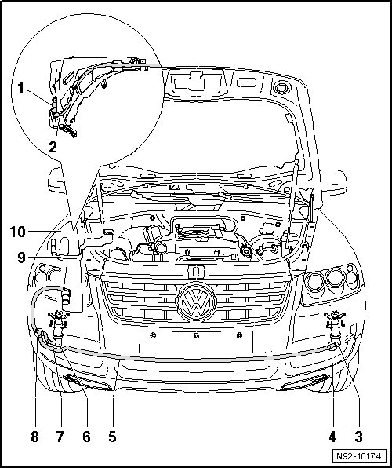

Headlamp Washer System Assembly Overview
Headlamp Washer System Assembly Overview

1 - Headlamp Washer Pump (V11)
• Removing and installing --> [ Headlamp Washer Pump ] Headlamp Washer Pump
• Checking --> [ Vehicle Electrical System Output Diagnostic Test Mode ] Initial Inspection and Diagnostic Overview
• Adjusting activation time and delay time up to activation --> [ Headlamp Washer System Activation Time, Adapting ] Testing and Inspection
2 - Angle coupling
• Connection to Headlamp Washer Pump
3 - Lift cylinder for left wash
• Washer jet telescopic cylinder, removing and installing --> [ Headlamp Spray Nozzle Lift Cylinder ] Headlamp Spray Nozzle Lift Cylinder
• Washer jet retainer, removing and installing --> [ Headlamp Spray Nozzle Holder ] Headlamp Spray Nozzle Holder
4 - Connecting piece
• Connection to lift cylinder for left spray nozzle
5 - Hose
• S 10 x 3 mm
6 - Lift cylinder for right wash
• Washer jet telescopic cylinder, removing and installing --> [ Headlamp Spray Nozzle Lift Cylinder ] Headlamp Spray Nozzle Lift Cylinder
• Washer jet retainer, removing and installing --> [ Headlamp Spray Nozzle Holder ] Headlamp Spray Nozzle Holder
7 - Angle coupling
• Connection to lift cylinder for right spray nozzle
8 - Y-piece
• Divides washer fluid line to washer nozzle lift cylinders
9 - Filler tube for tank for windshield washer system and headlamp cleaning system
• Removing and installing --> [ Windshield and Headlamp Washer Fluid Reservoir Filler Neck ] Windshield and Headlamp Washer Fluid Reservoir Filler Neck
10 - Washer fluid reservoir
• Removing and installing --> [ Windshield and Headlamp Washer Fluid Reservoir ] Windshield and Headlamp Washer Fluid Reservoir